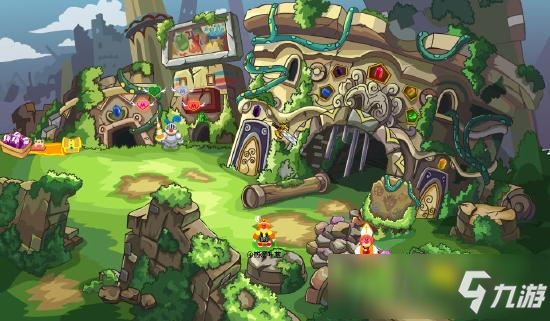

摩尔庄园手游黑森林是什么 黑森林背景故事
很久很久以前，摩尔和拉姆都生活在黑森林里。摩尔们善良、勤劳。
拉姆是大家的伙伴，好朋友。在那场大火发生前，黑森林是最美丽的地方，它是文化交流的中心……
摩尔们那时都住在地下，最大的乐趣就是挖来挖去。每个人都是天生的建筑师。大家彼此之间相亲相爱，共同协作，建筑自己的家园。
拉姆是黑森林的植物精灵，他们调皮、可爱，生活在大榕树上，是大伙儿的好朋友。拉姆们常常帮助摩尔工作，并和摩尔们一起玩耍。
在摩尔王的的带领下，摩尔庄园建立了。摩尔王八世28年，黑森林突发大火，并迅速蔓延……面对这不知从哪里冒出的大火，大家心中充满了恐惧……野火借着风势迅速蔓延。不仅毁坏了摩尔们生活的地洞，连拉姆们赖以生存的大榕树也在这场大火中被烧成了灰烬。
在逃离黑森林时，摩尔们不忘带着他们的好伙伴拉姆。现在，小摩尔和拉姆们快乐的生活在庄园里，与黑森林遥遥相望……历史每天都在继续着，也许会留下你的名字，也许你能改变历史。这一切，需要大家的共同努力。

＞＞黑森林相关角色：
▷动物
嘟噜噜(荆棘丛林1~4，现在在浆果瀑布)
小毛毛(超可爱~~)
毛毛族长、毛毛怪、毛毛脚(没有见到，但有)
菲利克斯(大肥鸡，现在是牧场动物)
咕唧鸟
▷摩尔
猎人M、RK、瑞琪、木精灵
▷植物
鲁比
食人花